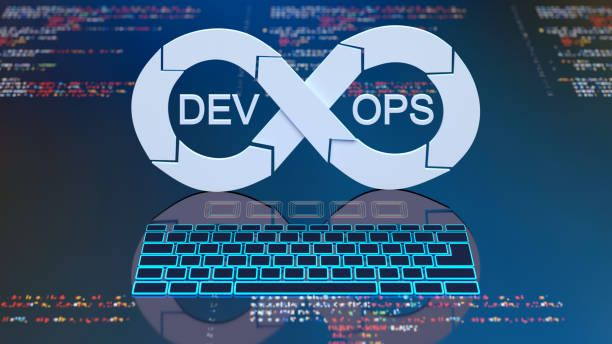

Développeur Web
Un développeur web est un professionnel spécialisé dans la création, la maintenance et l'amélioration des sites internet et des applications web.
Il travaille avec des langages comme HTML, CSS et JavaScript pour concevoir des interfaces attrayantes et fonctionnelles (Front-end).
Pour le Back-end, il utilise des technologies comme PHP, Python, Ruby ou Node.js afin de gérer les bases de données, l’authentification des utilisateurs et le stockage des informations.
Ce métier exige une bonne compréhension de l’expérience utilisateur (UX/UI), de la sécurité des sites, ainsi que des performances du web.
Le développeur web travaille souvent en équipe avec des designers et des chefs de projet pour s'assurer que les sites répondent aux besoins des clients.
Nombre d'années d'étude : 2 à 5 ans (BUT, Licence, Master ou école d'ingénieur)
Source : OpenClassrooms, Le Wagon
Développeur Mobile
Un développeur mobile est un spécialiste du développement d'applications pour smartphones et tablettes.
Il travaille principalement sur deux plateformes : Android (Java/Kotlin) et iOS (Swift).
Son rôle est de concevoir des applications intuitives, performantes et adaptées aux attentes des utilisateurs.
En plus de la programmation, il doit s'assurer de la compatibilité avec les différents appareils et versions d’OS.
Il optimise les performances des applications et intègre des services comme la géolocalisation, le stockage cloud et les bases de données distantes.
Les tests et la correction des bugs font également partie de son travail afin de garantir une application stable et sans erreurs.
Nombre d'années d'étude : 3 à 5 ans (BUT, Licence, Master ou école spécialisée)
Source : Udemy, Google Developers
Développeur Jeux Vidéo
Un développeur jeux vidéo est un programmeur qui conçoit et implémente les mécaniques d’un jeu en utilisant des moteurs comme Unity (C#) ou Unreal Engine (C++).
Il est responsable du code qui contrôle les interactions, l’intelligence artificielle, la physique et le rendu graphique du jeu.
Il travaille en étroite collaboration avec des artistes, des designers et des scénaristes afin d’offrir une expérience immersive et fluide aux joueurs.
Ce métier demande une solide compréhension des algorithmes, des mathématiques et de la gestion de projet.
Les développeurs doivent aussi optimiser les performances pour assurer une fluidité optimale sur différentes plateformes (PC, consoles, mobile).
Nombre d'années d'étude : 3 à 5 ans (BUT, Licence, Master ou école de jeux vidéo)
Source : Gamecodeur, Ubisoft Careers
DevOps

Un ingénieur DevOps est un expert en développement et en exploitation informatique qui vise à automatiser et optimiser le déploiement des applications.
Il facilite la collaboration entre les développeurs et les équipes opérationnelles afin d’assurer un cycle de développement plus fluide et rapide.
Son travail consiste à mettre en place des pipelines d’intégration et de déploiement continu (CI/CD) pour accélérer la mise en production des logiciels.
Il utilise des outils comme Docker, Kubernetes, Ansible et des services cloud (AWS, Azure, Google Cloud).
Il veille également à la sécurité et à la scalabilité des infrastructures informatiques.
Nombre d'années d'étude : 3 à 5 ans (BUT, Licence, Master ou école d’ingénieur)
Source : Microsoft Learn, Red Hat